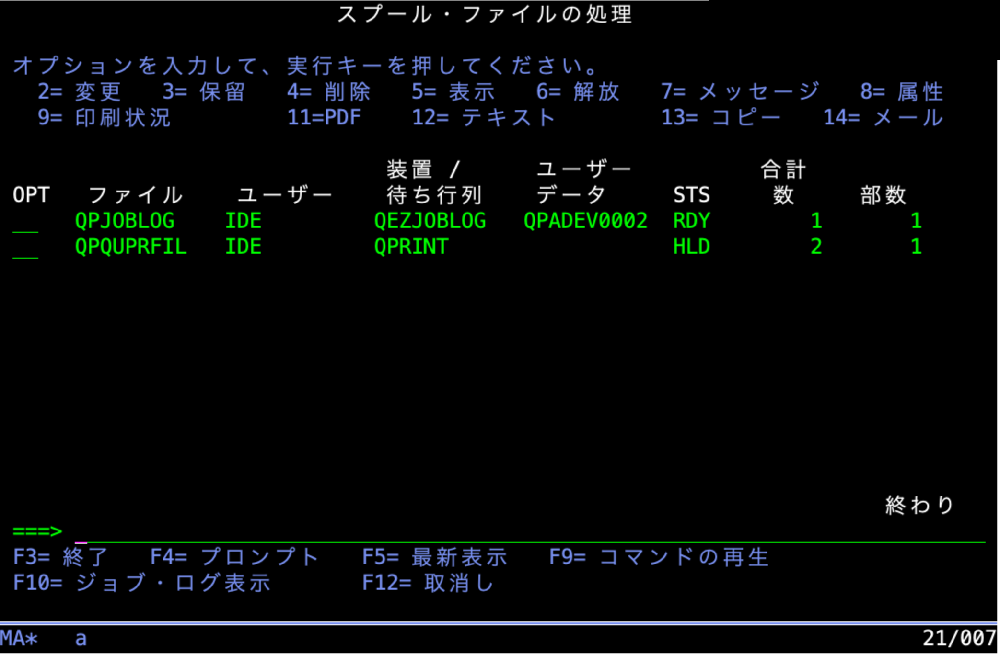

1. 概要
項目
内容
コマンド名
WRKMSPLF
機能名
スプール・ファイルの処理 (Work with My Spooled Files)
ライブラリ
MAI (Runtime) / MAIV300S (Source)
作成者
IDELIB
作成日
2026/09/12
バージョン
6.1 (WRKMSPLF.SQLRPGLE) / 01.00 (WRKMSPLFX.RPGLE)
機能説明
WRKMSPLF は IBM i の UIM (User Interface Manager) 技術を使用したスプール・ファイル管理コマンドです。
指定されたユーザーのスプール・ファイル一覧を表示し、各スプール・ファイルに対して次の操作を対話式で実行できます。
属性変更、保留、削除、表示、解放
ユーザー・メッセージ表示、属性参照、印刷状況確認
PDF 変換、テキスト変換、コピー、メール送信
2. コンポーネント一覧
コンポーネント
メンバー
ソース・ファイル
説明
コマンド
WRKMSPLFQCMDSRCコマンド定義
メイン・プログラム
WRKMSPLFQRPGLESRCUIM リスト制御 + SQL によるスプール情報取得
出口プログラム
WRKMSPLFXQRPGLESRCUIM アクション・リスト出口 (操作後のリスト更新)
パネル・グループ
WRKMSPLFQPNLSRCUIM 画面定義・ヘルプ情報
3. コマンド仕様 (WRKMSPLF.CMD)
コマンド定義
CMD PROMPT('スプール・ファイルの処理')
HLPID(WRKMSPLFC)
HLPPNLGRP(MAI/WRKMSPLF)パラメーター
パラメーター
キーワード
型
長さ
デフォルト
特別値
説明
ユーザー
USER*NAME10
*CURRENT*CURRENT, *ALL対象ユーザー
出力
OUTPUT*CHAR6
**, *PRINT出力先
USER パラメーター
値
説明
*CURRENT現行ユーザーのスプール・ファイルを表示
*ALLすべてのユーザーのスプール・ファイルを表示
ユーザー名
指定ユーザーのスプール・ファイルを表示
OUTPUT パラメーター
値
説明
*対話式ジョブは画面表示、バッチ・ジョブは印刷
*PRINTスプール・ファイル一覧を印刷出力
4. メイン・プログラム仕様 (WRKMSPLF.SQLRPGLE)
プログラム基本情報
項目
内容
プログラム名
WRKMSPLF
ソース・タイプ
SQLRPGLE (ILE RPG フリーフォーム + 埋め込み SQL)
アクティベーション・グループ
*NEW
バインド・ディレクトリー
QC2LE
バージョン
6.1
エントリー・パラメーター
パラメーター
変数名
型
長さ
必須
説明
ユーザー
p_usrchar10
任意
対象ユーザー (options(*nopass))
出力
p_outputchar6
任意
出力先 (options(*nopass))
グローバル変数
変数名
型
初期値
説明
applHandlechar(8)''UIM アプリケーション・ハンドル
funcReqint(10)0QUIDSPP 戻りファンクション要求
g_usrchar(10)'*CURRENT'ユーザー・フィルター (ロード時に使用)
g_sqlStmtvarchar(400)''動的 SQL ステートメント文字列
w_pnlNamechar(10)'MAINPNL'表示パネル名
w_pgrpQnmchar(20)'WRKMSPLF *LIBL'パネル・グループ修飾名
ファンクション・キー定数
定数名
値
説明
ENTKEY0Enter キー (UIM が LISTACT を処理済み)
F5KEY5F5=最新表示
F10KEY10F10=ジョブ・ログ表示
主処理フロー
1. エントリー・パラメーター処理
- p_usr が渡された場合、g_usr に設定
2. OUTPUT(*PRINT) 処理
- p_output = '*PRINT' の場合
-> QCMDEXC で WRKSPLF SELECT(...) OUTPUT(*PRINT) を実行して終了
3. パネル・グループのオープン (QUIOPNDA)
- エラー時はエスケープ・メッセージを送信して終了
4. 出口プログラム変数の設定 (QUIPUTV)
- UIM 変数 EXITVAR に 'WRKMSPLFX *LIBL' をセット
5. メイン・ループ
- clearList() でリストを削除
- loadList() でスプール・ファイルをリストに追加
- QUIDSPP でパネルを表示 (USRTSK='N')
- funcReq に応じた処理:
* ENTKEY (0): ループ継続 (UIM が LISTACT 処理済み)
* F5KEY (5): ループ継続 (リストを再ロード)
* F10KEY (10): DSPJOBLOG を実行してループ継続
* その他 (F3/F12): ループを抜ける
6. パネル・グループのクローズ (QUICLOA 'M')サブプロシージャー
clearList()
項目
内容
目的
UIM リスト (SPLFLIST) を削除して再ロード前にクリア
呼び出し API
QUIDLTL
エラー処理
リストが未アクティブの場合のエラーは無視
パラメーター:
名称
型
方向
説明
pApplHdlchar(8)入力
UIM アプリケーション・ハンドル
loadList()
項目
内容
目的
SQL で QSYS2.SPOOLED_FILE_INFO からスプール情報を取得し、UIM リストに追加
SQL 方式
動的 SQL (PREPARE + OPEN + FETCH)
呼び出し API
QUIADDLE
パラメーター:
名称
型
方向
説明
pApplHdlchar(8)入力
UIM アプリケーション・ハンドル
pUsrchar(10)入力
ユーザー・フィルター
使用 SQL サービス:
SELECT SPOOLED_FILE_NAME, JOB_NAME, JOB_USER,
JOB_NUMBER, SPOOLED_FILE_NUMBER, TOTAL_PAGES,
COPIES, STATUS, OUTPUT_QUEUE,
COALESCE(USER_DATA, '')
FROM TABLE(QSYS2.SPOOLED_FILE_INFO(USER_NAME => '<ユーザー名>')) x
ORDER BY SPOOLED_FILE_NUMBERスプール状況コードの変換 (SQL STATUS -> UIM 表示コード):
SQL STATUS 値
UIM 表示コード
説明
OPENOPNオープン
READYRDY作動可能
DEFERREDDFR据え置き
SENDINGSND送信中
CLOSEDCLOクローズ
HELDHLD保留中
SAVEDSAV保管
PENDINGPND保留中
WRITINGWTR書き出し中
PRINTINGPRT印刷中
MESSAGE WAITINGMSGWメッセージ待機
その他
先頭 4 文字
そのまま表示
5. UIM アクション・リスト出口プログラム仕様 (WRKMSPLFX.RPGLE)
プログラム基本情報
項目
内容
プログラム名
WRKMSPLFX
ソース・タイプ
RPGLE (ILE RPG フリーフォーム)
アクティベーション・グループ
*CALLER
バージョン
01.00
作成日
2026/03/27
役割
UIM の USREXIT='CALL EXITPGM' 機構によって呼び出される出口プログラムです。
エントリー・パラメーター
パラメーター
変数名
型
長さ
説明
出口パラメーター
p_exitParmschar70
UIM アクション・リスト出口パラメーター構造
出口パラメーター構造 (exitParms DS)
UIM が渡す Qui_ALX_t / EUIQALX 構造体:
フィールド名
型
位置
説明
strucLevelint(10)1
構造体レベル
reserv1char(8)5
予約
callTypeint(10)13
呼び出し種別 (5 = アクション・リスト出口)
applHandlechar(8)17
UIM アプリケーション・ハンドル
panelNamechar(10)25
パネル名
listNamechar(10)35
リスト名
listEntrychar(4)45
リスト・エントリー・ハンドル
listOptionint(10)49
選択オプション番号
funcQualifierint(10)53
ファンクション修飾子 (0=Enter, 1=Prompt)
resultint(10)57
コマンド実行結果 (0=成功, 非ゼロ=エラー)
fieldNamechar(10)61
フィールド名
処理フロー
1. result <> 0 の場合 (コマンド失敗): 即時終了 (リスト変更なし)
2. オプション 4 (削除) の場合:
- QUIRMVLE でリスト・エントリーを削除して終了
3. その他のオプション (2=変更, 3=保留, 6=解放 など):
a. QUIGETLE で現在のリスト・エントリー内容を取得
b. QUSRSPLA (SPLA0100) でスプール・ファイルの最新属性を取得
c. スプール・ファイルが存在しない場合は QUIRMVLE でエントリーを削除して終了
d. 最新属性を uimEntry バッファに反映:
- 出口コード (uie_sts) をオプション番号に基づいて設定:
* 2=変更 -> '*CHG'
* 3=保留 -> '*HLD'
* 6=解放 -> '*RLS'
* その他 -> QUSRSPLA の status を変換
- uie_outq, uie_usrdta, uie_pgs, uie_cpy を更新
e. QUIUPDLE でリスト・エントリーを更新QUSRSPLA 使用情報
項目
値
API
QUSRSPLA (スプール・ファイル属性の検索)
フォーマット
SPLA0100
修飾ジョブ名
uie_jobnm + uie_usr + uie_nbr (26 文字)
SPLA0100 形式 主要フィールド
フィールド名
型
説明
jobNamechar(10)ジョブ名
userNamechar(10)ユーザー名
jobNbrchar(6)ジョブ番号
splfNamechar(10)スプール・ファイル名
splfNbrint(10)スプール・ファイル番号
userDatachar(10)ユーザー・データ
statuschar(10)スプール・ファイル状況
totPagesint(10)総ページ数
totCopiesint(10)総部数
outqNamechar(10)出力待ち行列名
6. パネル・グループ仕様 (WRKMSPLF.PNLGRP)
パネル・グループ基本情報
項目
内容
パネル・グループ名
WRKMSPLF
リスト動作
ACTOR=UIM (UIM がアクション・リストを自動処理)
ヘルプ
コマンド・プロンプト・ヘルプ HLPID=WRKMSPLFC 含む
クラス定義
クラス名
基本型
説明
ACTNCLSACTIONオプション入力フィールド
CHAR10CHAR 10文字 10 桁
CHAR6CHAR 6文字 6 桁
STSCLSCHAR 10状況コード
PGSCLSBIN 15 (幅 5)ページ数・部数
PARMCLSCHAR 255コマンド行・パラメーター文字列
PGMCLSCHAR 20プログラム修飾名
ダイアログ変数定義 (VARRCD)
SPLFENT (リスト・エントリー、78 バイト)
変数名
クラス
バイト数
説明
OPTACTNCLS (BIN 15)2
オプション番号
FILCHAR1010
スプール・ファイル名
USRCHAR1010
ユーザー名
OUTQCHAR1010
出力待ち行列名
USRDTACHAR1010
ユーザー・データ
STSSTSCLS10
状況コード
PGSPGSCLS (BIN 15)2
総ページ数
CPYPGSCLS (BIN 15)2
部数
NBRCHAR66
ジョブ番号
JOBNMCHAR1010
ジョブ名
SPNCHAR66
スプール・ファイル番号
合計 78
PARMENT
変数名
クラス
説明
ZCMDPARMCLSコマンド行入力
EXITVAR
変数名
クラス
説明
EXITPGMPGMCLS出口プログラム修飾名
リスト・アクション定義 (ACTOR=UIM)
オプション
表示テキスト
実行コマンド
F4 プロンプト対応
2
変更
CHGSPLFAあり
3
保留
HLDSPLFあり
4
削除
DLTSPLFあり
5
表示
DSPSPLFあり
6
解放
RLSSPLFあり
7
メッセージ
WRKMSG MSGQ(&USR.)あり
8
属性
WRKSPLFAあり
9
印刷状況
WRKOUTQ OUTQ(&OUTQ.)あり
11
PDF
MAI/SPLTOPDFあり
12
テキスト
MAI/SPLTOTXTあり
13
コピー
CPYSPLFあり
14
メール
MAI/SPLTOMAILあり
注意: 各アクションには USREXIT='CALL EXITPGM' が設定されており、コマンド実行後に WRKMSPLFX が呼び出されます。
ファンクション・キー定義
キー
アクション
説明
F1 / HELP
HELPヘルプ表示
ENTER
ENTERリスト・アクション実行
F3
EXITプログラム終了
F4
PROMPTコマンド・プロンプト表示
F5
RETURN 5最新表示 (funcReq=5)
F9
RETRIEVEコマンド再生
F10
RETURN 10ジョブ・ログ表示 (funcReq=10)
F12
CANCEL取消し
F24
MOREKEYSキーの続きを表示
PAGE DOWN
PAGEDOWN次ページ
PAGE UP
PAGEUP前ページ
リスト列定義
列変数
使用
最大幅
ヘッダー
OPTINOUT
3
OPT
FILOUT
10
ファイル
USROUT
10
ユーザー
OUTQOUT
10
装置/待ち行列
USRDTAOUT
10
ユーザー・データ
STSOUT
4
STS
PGSOUT
6
合計数
CPYOUT
6
部数
7. 処理フロー
全体シーケンス
sequenceDiagram
autonumber
actor User as ユーザー
participant CMD as WRKMSPLF
OUTPUT(*PRINT) 処理
OUTPUT(*PRINT) が指定された場合、WRKMSPLF は自分でリストを印刷するのではなく、IBM i 標準コマンド WRKSPLF に委譲します。
WRKSPLF SELECT(<ユーザー名>) OUTPUT(*PRINT)8. データ構造
UIM リスト・エントリー (uimEntry DS / VARRCD SPLFENT)
+--------+----------+----------+----------+----------+----------+------+------+--------+----------+--------+
| OPT | FIL | USR | OUTQ | USRDTA | STS | PGS | CPY | NBR | JOBNM | SPN |
| BIN 15 | CHAR 10 | CHAR 10 | CHAR 10 | CHAR 10 | CHAR 10 | BIN15| BIN15| CHAR 6 | CHAR 10 | CHAR 6 |
| 2 byte | 10 bytes | 10 bytes | 10 bytes | 10 bytes | 10 bytes | 2 b | 2 b | 6 bytes| 10 bytes | 6 bytes|
+--------+----------+----------+----------+----------+----------+------+------+--------+----------+--------+
Total: 78 bytes出口パラメーター構造 (exitParms DS / Qui_ALX_t)
Offset Len Field
1 4 strucLevel (INT 10)
5 8 reserv1 (CHAR 8)
13 4 callType (INT 10) -- 5 = Action List Exit
17 8 applHandle (CHAR 8)
25 10 panelName (CHAR 10)
35 10 listName (CHAR 10)
45 4 listEntry (CHAR 4)
49 4 listOption (INT 10)
53 4 funcQualifier(INT 10) -- 0=Enter, 1=Prompt
57 4 result (INT 10) -- 0=Success
61 10 fieldName (CHAR 10)
Total: 70 bytes9. 使用 API 一覧
UIM API
API
プログラム
説明
QUIOPNDAWRKMSPLF
UIM アプリケーションのオープン
QUIDSPPWRKMSPLF
パネルの表示 (USRTSK='N' で F3 プロンプト折り返し防止)
QUICLOAWRKMSPLF
UIM アプリケーションのクローズ
QUIADDLEWRKMSPLF
リスト・エントリーの追加
QUIDLTLWRKMSPLF
リストの削除
QUIPUTVWRKMSPLF
ダイアログ変数への書き込み
QUIGETVWRKMSPLF
ダイアログ変数の読み取り
QUIGETLEWRKMSPLFX
リスト・エントリーの取得
QUIUPDLEWRKMSPLFX
リスト・エントリーの更新
QUIRMVLEWRKMSPLFX
リスト・エントリーの削除
システム API / コマンド
API / コマンド
プログラム
説明
QCMDEXCWRKMSPLF
CL コマンドの実行
QMHSNDPMWRKMSPLF
プログラム・メッセージの送信
QUSRSPLAWRKMSPLFX
スプール・ファイル属性の取得 (SPLA0100)
SQL サービス
SQL サービス
プログラム
説明
QSYS2.SPOOLED_FILE_INFOWRKMSPLF
スプール・ファイル情報の取得
10. 画面説明
メイン画面 (MAINPNL)

WRKMSPLF メイン画面（実機画面サンプル）
主要な表示列
列
説明
OPT
オプション入力欄 (入出力)
ファイル
スプール・ファイル名
ユーザー
スプール・ファイル所有者
装置/待ち行列
出力待ち行列名
ユーザー・データ
ユーザー定義テキスト
STS
スプール状況コード
合計数
総ページ数
部数
印刷部数
スプール状況コード
コード
意味
RDY作動可能 - 印刷可能な状態
OPNオープン - 書き込み中
DFR据え置き - 印刷据え置き
SND送信中 - リモートへ送信中/送信済み
CLOクローズ - 処理完了、ジョブ終了まで保留
HLD保留中 - ユーザーまたはシステムによる保留
SAV保管 - 印刷後保管
PND保留中 - 印刷変換中または印刷待ち
WTR書き出し中 - 出力作成中
PRT印刷中 - 印刷完了待ち
MSGWメッセージ待機 - 応答が必要
*CHG変更済み - オプション 2 実行後
*HLD保留済み - オプション 3 実行後
*RLS解放済み - オプション 6 実行後